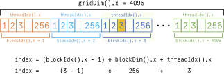

As Moore’s Law comes to an end, parallel computing hardware such as GPUs have been fundamental in driving progress in compute-intensive applications across nearly every field, such as bioinformatics, self-driving cars, deep learning, and so on. The core idea is straightforward: instead of having one large task you assign to a very fast CPU, you break the task into many small pieces. Each of these small sub-tasks is then assigned to one of the thousands of cores in a modern GPU, which all complete the sub-tasks in parallel.
Even though each of the GPU cores individually is weak compared to a CPU core, their sheer number, working on the problem in parallel, can result in speedups of several orders of magnitude.
In this blog post, we cover the basics of how to write programs for Nvidia GPUs in the Julia language. We’ll go step-by-step through a function that adds two 1D arrays (vectors) in parallel. By the end of this post, we’ll have added two vectors of a million elements each on the GPU:
const n = 2^20 # 1048576
const THREADS_PER_BLOCK = 256
function add!(c, a, b)
x = (blockIdx().x - 1) * blockDim().x + threadIdx().x
@inbounds c[x] = a[x] + b[x]
return
end
@cuda threads=THREADS_PER_BLOCK blocks=n÷THREADS_PER_BLOCK add!(C, A, B)But first
You (probably) shouldn’t write GPU code
Being able to program GPUs opens up an entire world of parallel programming to you, but it’s also a skill you should only use as necessary. For most common operations, there already exist optimized implementations you should use. For instance, you can add two arrays A and B on the GPU with A .+ B 1 and Julia2 will automatically call optimized code, saving you the need to write a kernel.
This ties into the basic programming principle of avoiding the “not invented here” syndrome: in this case, existing libraries already cover the majority of use cases by running GPU operations for you, and you should avoid writing your own GPU code in these cases.
Nonetheless, it’s the edge cases (for which existing GPU implementations do not exist) where innovation happens, such as custom simulations or a new neural network operation. If that’s true and your problem lends itself well to being parallelized, consider the possibility of writing your own GPU code.
And if you should, consider using Julia
Most tutorials on CUDA you’ll find online will use C/C++, with good reason: CUDA was originally designed to work with C/C++, which are generally considered high-performance languages. The issue is that they’re also low-level languages, which leads to code that is hard to read and even harder to maintain. For instance, the code to transpose a 2D matrix (without optimizations) looks like this in C++:
// from https://github.com/NVIDIA-developer-blog/code-samples/blob/master/series/cuda-cpp/transpose/transpose.cu
const int TILE_DIM = 32;
const int BLOCK_ROWS = 8;
__global__ void transposeNaive(float *odata, const float *idata)
{
int x = blockIdx.x * TILE_DIM + threadIdx.x;
int y = blockIdx.y * TILE_DIM + threadIdx.y;
int width = gridDim.x * TILE_DIM;
for (int j = 0; j < TILE_DIM; j+= BLOCK_ROWS)
odata[x*width + (y+j)] = idata[(y+j)*width + x];
}In comparison, the equivalent Julia code compiles to the same GPU instructions as the C++ version while being considerably more readable:
const TILE_DIM = 32
const BLOCK_ROWS = 8
function transpose!(odata, idata)
x = (blockIdx().x - 1) * TILE_DIM + threadIdx().x
y = (blockIdx().y - 1) * TILE_DIM + threadIdx().y
for j in 0:BLOCK_ROWS:TILE_DIM-1
odata[x, y + j] = idata[y + j, x]
end
endThis is the core advantage: Julia is a high-level language, and CUDA.jl (the Julia library that interfaces with CUDA) allows us access to several conveniences, such as
Not having to work with direct pointers to GPU memory. Instead, we work with the
CuArraytype, which behaves mostly the same as the regularArraytype on the CPUIn C++, we’d have to allocate GPU memory and then copy the data from the CPU to the GPU ourselves. In Julia, we use the
cufunction on a CPUArray, and this function handles the entire transfer process for us, directly returning us aCuArray.We can write generic kernels. In C++, we have to specify the type of GPU inputs (
floats, in the case above). For instance, if we wanted an addition kernel that’d work with integers, it’d have to be written separately. In Julia, the kernel is compiled on-the-fly by default when new input data types are passed in, which means the same code above would work both onfloats andints.
The two language problem
Writing our kernels in Julia also allows one other key advantage: avoiding the two language problem. Today, most high-performance computing libraries are written in two languages: the compute-intensive sections are written in C++ and are then accessed by the end-user with “glue” code written in a higher-level language, like Python. This is the pattern used in major libraries like TensorFlow or PyTorch.
The problem with this is double-fold: Firstly, your library becomes harder to maintain (since low-level languages are inherently more mentally taxing). Secondly, your end-users (who might only know Python) are unable to contribute much to improving the performance of your code (since that would be in C++).
By having all your code in one language, not only does it become easier for you to reason through the code, but you’re far more likely to catch bugs in an open-source setting, as your end users can understand and contribute to the code as well.
The CUDA Programming Model
Parallel programming requires one big, obvious paradigm shift from the standard programming models you are used to: your code will be run on thousands of cores at the same time. To make the most of this new paradigm, there are two concepts we need to understand: kernels and the thread hierarchy.
Threads
It is helpful to think of each thread as a worker that is assigned a small sub-task of the overall task. Note that the number of threads is not the number of cores on a GPU; the thread is a logical unit, whereas the core is a physical unit. For large problems, you can request threads far in excess of the number of cores; the GPU will begin running as many of those threads as it physically can and run more threads as the already running threads are completed. Logically, from the programmer’s point of view, all the threads you request are run at the same time; CUDA takes care of the actual scheduling and ordering of the threads for you.
CUDA then allows you, the programmer, to not worry about the details of the parallelization. All you need to do is break the task down so that each thread has a clearly defined sub-task (e.g. when adding two 1D vectors \(a\) and \(b\) the ith thread performs \(a_i + b_i\)), and then request as many threads as needed to solve the entire problem.
Kernels
With ordinary functions, when it is called once, it is also executed once. When a function is called once, through CUDA, the function is executed \(N\) times by each of the \(N\) threads on the GPU. These functions are called kernels, and each of the three code snippets we’ve seen so far is a kernel.
A fragment of code very common when writing kernels is for a thread to compute what numbered thread it is globally. Here, this happens on line 5:
const n = 2^20 # 1048576
const THREADS_PER_BLOCK = 256
function add!(c, a, b)
x = (blockIdx().x - 1) * blockDim().x + threadIdx().x
@inbounds c[x] = a[x] + b[x]
return
end
@cuda threads=THREADS_PER_BLOCK blocks=n÷THREADS_PER_BLOCK add!(C, A, B)The computed value of x changes on the thread executing it (thread 1 will obtain x = 1, whereas thread 1252 will obtain x = 1252). Then, each thread subsequently accesses and sums together different parts of the input on line 7. This means every single thread carries out the same instruction, just on different parts of the data, leading to the acronym SIMT: Single Instruction, Multiple Threads. This approach mean we only have to do two things to achieve parallelism:
Write one set of instructions (i.e. one kernel function) for all the threads to carry out (i.e. execute)
Ensure each thread accesses the correct part of the input for its sub-task.
Thread Hierarchy
Blocks
For tasks more interesting than just basic addition, threads may need to work with each other. Hence, with CUDA, we don’t simply carry out “launch 1,048,576 threads”. Rather, threads are grouped into blocks, and we ask CUDA to “launch 4,096 blocks, with 256 threads each”.
When run, threads in the same block have access to a shared memory that they can use to transfer information between each other. This memory resides directly on the GPU chip, so accessing it has very low latency. A common strategy is to break a large problem (e.g. multiplying a \(512 \times 512\) matrix) into many smaller problems (e.g. multiply many \(8 \times 8\) matrices), and then for a block of threads to load into shared memory only the part of the original problem it then needs to work on together.
Importantly, different blocks run independently of each other and must be able to run in any order. While this limits communication between blocks, this constraint produces two advantages:
It allows the GPU to run blocks in parallel without causing any side effects since each block is programmed to run independently.
It allows the programmer to focus on implementing code only across the threads of one block correctly (instead of every single thread on the GPU) because it can then be automatically parallelized across the entire problem.
In order to have access to shared memory, threads in the same block are run on the same physical SM, that is, a streaming multiprocessor (a group of 64 CUDA cores). This results in a practical constraint: a block cannot have more than 1024 threads, and CUDA enforces this.
Grid
The grid refers to all the blocks scheduled to run for a problem. Like threads and blocks, it is a logical (and not a physical) construct. Logically, from the programmer’s point of view, all blocks on the grid execute in parallel; physically, the GPU will run as many blocks as it can on all available SMs in parallel and start running new blocks as the existing ones are completed.
Writing a kernel
The 1D add kernel
We now return to a more fleshed-out implementation of our code snippet from earlier. The code below does three things:
creates three 1D arrays (i.e. vectors) of length 1,048,576 and sends them to the GPU
defines an addition kernel
launches the kernel with the correct number of blocks and threads to perform the actual calculation
For simplicity, we set the length of the vector to be \(2^{20}=1048576\), a number divisible by the number of threads we assign per block (256).
using CUDA
const n = 2^20 # 1048576, number of elements in 1D arrays
const THREADS_PER_BLOCK = 256
# create a vector [0.0, 0.0, 0.0...], and send to GPU
C = zeros(Float32, n) |> cu
# create two vectors, fill them with 1s and 2s, and send to GPU
A = fill(1.0f0, n) |> cu
B = fill(2.0f0, n) |> cu
function add!(c, a, b)
# compute the thread_id
x = (blockIdx().x - 1) * blockDim().x + threadIdx().x
# i'th thread should get the i'th elements of a and b
# sum them, and then store them in i'th element of c
@inbounds c[x] = a[x] + b[x]
return
end
threads = THREADS_PER_BLOCK # 256
blocks = n ÷ threads # 4096
# launch the kernel with 4096 blocks, of 256 threads each
@cuda threads=threads blocks=blocks add!(C, A, B)Sending data to the GPU
We create a vector C, to hold our output values, as well as vectors A and B that are filled with 1s and 2s, respectively. We then use the cu function described earlier3 which takes in an Array on the CPU, and sends it to the GPU, returning a CuArray .
# create a vector [0.0, 0.0, 0.0...], and send to GPU
C = zeros(Float32, n) |> cu
# create two vectors, fill them with 1s and 2s, and send to GPU
A = fill(1.0f0, n) |> cu
B = fill(2.0f0, n) |> cuOne thing of note is that all three vectors have 32-bit (“single-precision”) floats4 as opposed to 64-bit (“double-precision”) values. GPUs perform better when working with single-precision data, and unless you have good reason to be very numerically precise (e.g. simulating a chaotic system), single-precision data should more than suffice.
Zooming in
Let’s zoom in on the kernel itself, free of its boilerplate:
function add!(c, a, b)
# compute the thread_id
x = (blockIdx().x - 1) * blockDim().x + threadIdx().x
# i'th thread should get the i'th elements of a and b
# sum them, and then store them in i'th element of c
@inbounds c[x] = a[x] + b[x]
return
endThere are four things of note going on here:
- Inside a kernel, a thread has access to special functions. Here, we use three:
blockIdx(): returns what block number the thread is part ofblockDim(): returns the number of threads in that blockthreadIdx(): returns which thread in the block the current thread is
For instance, when the 3rd thread in the 3rd block calls these functions, it will be evaluated in the way shown below5, resulting in a global index of 515.

Once we have the thread’s global index, we index out the relevant values from the
aandbvectors, add them and then store them into the corresponding location incon line 7.Julia typically performs bounds checking to make sure we’re not using an index value outside the boundaries of an array. While useful with typical CPU code, this comes with a performance hit. To make the most of the GPU’s capabilities, it is recommended to use the
@inboundsmacro as we do on line 7, which tells Julia to disable bounds checking for that line.One important aspect of kernels is that they cannot return values directly. All changes they make have to be in the form of changes to their inputs6, which is why we use vector
Cto store all the output values. On line 8, we only have the keywordreturn, which instructs the function to have no return value.
Launching the kernel
Once we have our data and our kernel, we need to actually launch our kernel, which we can do using the @cuda macro:
threads = THREADS_PER_BLOCK # 256
blocks = n ÷ threads # 4096
# launch the kernel with 4096 blocks, of 256 threads each
@cuda threads=threads blocks=blocks add!(C, A, B)Here, we choose to use 256 threads per block. Since each thread is processing one element, and we have 1,048,576 elements total, we will need 1,048,576 threads. We calculate the number of blocks (of 256 threads) we’ll need to have that many threads, and it comes out to 4,096 blocks.
We then launch the kernel using the @cuda macro, passing in the number of threads and blocks we’d like to use. This modifies the array C in-place, replacing its 0-initialized values with the ones from our computation. Hence, we get C = [3.0, 3.0,…, 3.0] .
Quick check
Take a minute, and try to figure out what would happen to the vector C if we initialized C to a vector of 0’s, and ran the following: @cuda threads=1 blocks=1 add!(C, A, B) i.e. if we launched the kernel with only one block and one thread in that block.
\(\cdot \cdot \cdot\)
In this case, there’s one thread overall. That thread computes its index to be 1 and updates the first element of C with A[1]+B[1]. Since there are no more threads, all other elements of C remain untouched and have their initial value of 0. Then, C = [3.0, 0.0,…, 0.0].
Finishing the kernel
Now that we understand how to write kernels, let’s improve the addition kernel into a function an end-user can use.
Handling all input sizes
The current implementation of the kernel can only process vectors whose number of elements is a multiple of the number of threads per block. To lift this constraint, we make the two following changes:
- Previously, we performed direct integer division to get the number of blocks (
blocks = n ÷ threads). This is only sensible when the length of the vector is an integer multiple of the number of threads. Instead, now we perform regular division and then round up:
threads = THREADS_PER_BLOCK # 256
# calculate number of blocks needed to get total threads
# equal to number of elements, then round *up* to nearest integer
# this previously was: blocks = n ÷ threads
blocks = ceil(Int64, length(C)/threads)
# launch the kernel with specified number of blocks, of 256 threads each
@cuda threads=threads blocks=blocks add!(C, A, B)-
That is, we launch the minimum number of blocks such that the number of total threads is equal to or more than the number of elements in our vector.
- Now, we might have more threads than entries in the vector. For instance, if the vector has 1,000,000 elements, 3907 blocks will be launched, with 1,000,192 threads total. When thread 1,000,101 will try to obtain the 1,000,101st element of
Cit’ll face an indexing error. To avoid this, we update our kernel as such:
function add!(c, a, b)
# compute the thread_id
x = (blockIdx().x - 1) * blockDim().x + threadIdx().x
# only perform action if thread id is not greater than the number of elements
if x <= size(c)[1]
# i'th thread should get the i'th elements of a and b
# sum them, and then store them in i'th element of c
@inbounds c[x] = a[x] + b[x]
end
return
end-
For threads with an index greater than the number of elements, the
if condition is never met, and they simply go to the next line (the return on line 11), finish running and are marked by the GPU as completed.
Preparing for the end-user
To run our custom kernel on the GPU we need to create an appropriately sized output vector, as well as launch the kernel with the correct number of blocks and threads. This is fine for prototype code, but if we want this to be used by others (who presumably only care about adding two vectors), we should simplify our code by writing a “companion function” for the kernel, that launches the kernel for the user:
function add(a::CuVector, b::CuVector)
# check a and b have the same length
if length(a) != length(b)
throw(DimensionMismatch("A and B must have same number of elements; A has $(length(a)) elements, B has $(length(b)) elements"))
end
# number of elements for vector c
n = length(a)
# get the types of elements of vector a and b and
# use that to compute the element type for vector c
typea = eltype(a)
typeb = eltype(b)
typec = promote_type(type_a, type_b)
# create a vector of zeros (directly on the GPU)
# of length n and type typec
c = CUDA.zeros(typec, n)
# compute the number of threads and blocks
threads = THREADS_PER_BLOCK # 256
blocks = ceil(Int64, n/threads)
# launch the kernel
@cuda threads=threads blocks=blocks add!(c, a, b)
return c
endSuch functions will usually do three things: First, check any necessary conditions are met. Second, create new arrays to hold the output. Finally, launch the kernel.
Checking conditions
Here, we check whether both inputs are indeed 1-D arrays on the GPU.
function add(a::CuVector, b::CuVector)
# check a and b have the same length
if length(a) != length(b)
throw(DimensionMismatch("A and B must have same number of elements; A has $(length(a)) elements, B has $(length(b)) elements"))
endThis is done by adding7 ::CuVector8 to the function argument. We then also check that a and b have the same number of elements, throwing a DimensionMismatch error otherwise.
Create output arrays
In this case, we need to create an output array c to hold the results of our computation. The length of the vector should be n, but what should be the type of its elements? For instance, if we’re adding two vectors of Float32 values, then c should be Float32, but what if a is CuVector{Float32}9 while b is CuVector{Int32} ?
Our goal is to write a generic function, that is, it should work for all possible combinations of the element types of a and b. CUDA.jl will automatically compile new versions of the kernel, but we also need to make sure that the output vector c is of the correct type.
typea = eltype(a)
typeb = eltype(b)
typec = promote_type(type_a, type_b)
c = CUDA.zeros(typec, n)We do this by using the standard Julia functions for this purpose: use eltype to get the element types of a and b, then use promote_type to get the correct type needed for c . For instance:
if
aandbare of typesCuVector{Float32}andCuVector{Int32}respectivelythen,
typeaandtypebareFloat32andInt32then,
typecis computed to beFloat32under the rules of type promotion in Julia
We can then create a vector of zeros of typec elements and of length n directly on the GPU using CUDA.zeros(typec, n) .
Launching the kernel, v.2
This proceeds as previously: we calculate the number of threads and blocks as previously and launch the kernel. The only difference is that this time, the kernel launch happens inside a function that the end-user does not have to interact with. We then return the vector holding the outputs, c, as the output of the companion function.
With our companion function written, all our end-user has to do now to add two CuVectors A and B is call C = add(A, B) . This will run the necessary checks, allocate an output array and launch the required kernel. The user then gets returned a new vector C with the results of the addition.
Performance
I ran a quick, informal benchmark of the kernel on the task of summing two vectors with 10 million elements each, against the default way to do this on a CPU and GPU (which is to use A .+ B , as previously mentioned). I obtained the following10:
| Function Call | Time (ms) |
|---|---|
A .+ B (CPU, Xeon on GCP) |
17.11 |
add(A, B) (GPU, Tesla T4) |
0.651 |
A .+ B (GPU, Tesla T4) |
0.476 |
Our barebones implementation on the GPU is already over 26x faster than the CPU implementation (it still lags behind Julia’s optimized kernels, which are nearly 36x faster). This ties into the message at the start of this blog post: for the right problems, GPUs are orders of magnitude faster than CPUs. At the same time, to make the most of this advantage, focus your efforts on writing kernels for problems where optimized ones don’t already exist.
(We’ll begin exploring concepts related to optimizing GPU code, such as shared memory, warps, and thread divergence over the next few blog posts)
Conclusion
Although there aren’t as many resources for CUDA programming in Julia as compared to for C++, skimming through them can still be very beneficial to learn tips and tricks that can be translated into Julia code. I would recommend the CUDA Programming Guide for more details on how to program Nvidia GPUs and Mark Harris’s blog posts (one of his posts, An Even Easier Introduction to CUDA was the source of inspiration for this blog post).
Parallel programming is a powerful skill to have in an increasingly data-heavy world, and Julia’s support for it is poised to make it more accessible than ever before. I do hope that, having read this blog post, the snippet of code at the start feels more familiar now. We’ve just scratched the surface, and I intend to write more about CUDA programming in Julia over the coming weeks.
Update, Oct 2022: A lot has happened since I originally wrote this! Even though I still find Julia pretty cool, these days I find myself spending most of my time in Python. I might write a follow-up at some point, especially as the infrastructure surrounding Julia continues to mature.
Footnotes
We use dot syntax here, which automatically converts the
+operator to a vectorized version that is applied over the entire array↩︎In this case specifically, using the dot syntax results in Julia fusing the operation and creating a custom kernel under the hood.↩︎
You might notice instead of directly calling
cuon an inputX(i.e.cu(X)), we use this syntax:|> cu.|>is the pipe operator, andx |> fis equivalent tof(x), that is, the input is “piped” into the function. While subjective, I would consider this an idiomatic way to usecu, as the input is “piped” to the GPU.↩︎The
fill(1.0f0, n)syntax means “create a vector of lengthn, filled with1.0f0”. The1.0is the value, and thef0at the end tells Julia this is aFloat32.↩︎Note that the indices for both the
threadsandblocksstart at1. This is to remain consistent with Julia’s 1-indexing.(For comparison, in C++ the functions return indices starting at 0. You can see this behavior in the blog post that originally inspired this diagram)↩︎
This is also why kernels have their function names ending with
!. The Julia convention for functions that modify one or more of their arguments is to append a!to the name.↩︎In Julia,
x::typeis a type annotation, that “xis of typetype”.↩︎CuVectoris a type alias forCuArray, defined byCuVector{T} = CuArray{T,1}. That is, a CuVector is a CuArray where the elements are of any type, but the CuArray is only one dimensional.↩︎that is, a
CuVectorwhose elements areFloat32values↩︎AandBare randomly initializedFloat32arrays. For the CPU version,A .+ Bis called directly, while for the GPU version,AandBare moved to the GPU first before the addition.The benchmarks (done using BenchmarkTools.jl’s
@benchmarkmacro) cover the time needed to allocate the output array and perform the computation. (They do not cover the time needed to move the arrays to the GPU)↩︎